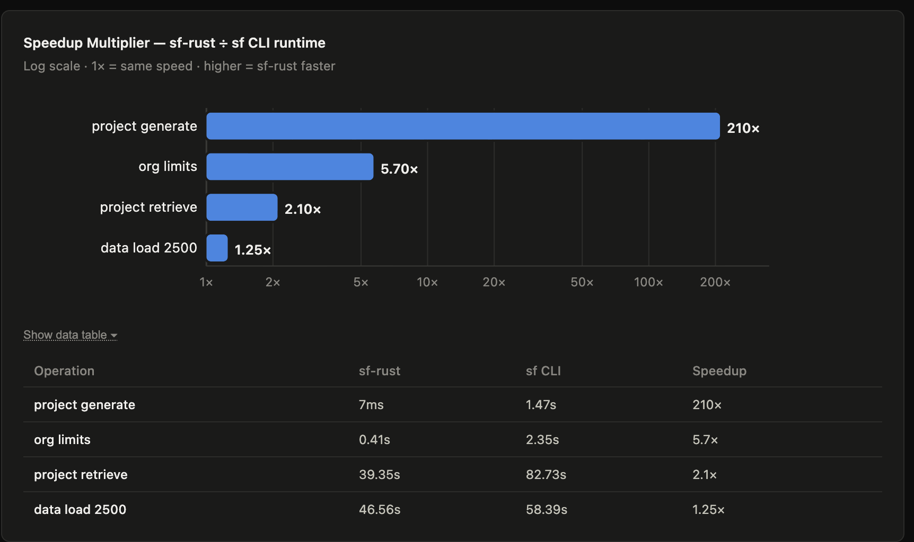
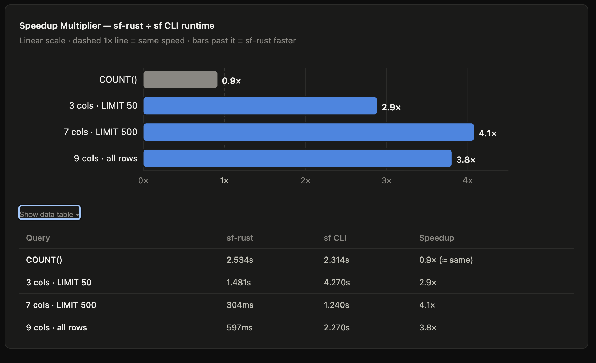

sf-rust — Performance Overview
sf-rust is a native Salesforce developer CLI written entirely in Rust — no Node.js
runtime, no plugin chain, a single statically-linked binary. The charts below compare it
against the official sf CLI (Node.js) across two operation families: general Salesforce
ops and SOQL data queries. All measurements are from macOS, November 2026.
General operations
Four operations measured end-to-end on a macOS developer machine. The speedup multiplier is plotted on a log scale because the range spans from 1.25× (bottlenecked by Salesforce's Bulk API server) up to 210× (pure client startup cost).

| Operation | sf-rust | sf CLI | Speedup |
|---|---|---|---|
project generate |
7 ms | 1.47 s | 210× |
org limits |
0.41 s | 2.35 s | 5.7× |
project retrieve |
39.35 s | 82.73 s | 2.1× |
data load 2 500 records |
46.56 s | 58.39 s | 1.25× |
project generate — 210×
sf-rust writes ~22 scaffold files in about 7 ms. The sf CLI spends the majority of
that 1.47 s booting the Node.js runtime, JIT-compiling the plugin chain, and resolving
module graphs before it writes a single byte. The file I/O is identical; the client startup
cost is not.
org limits — 5.7×
A single GET /services/data/v{ver}/limits/ HTTP request. sf-rust issues it within
~1 ms of invocation; sf takes ~2 s just to reach the network. This is the clearest
illustration of Node.js startup overhead on a pure network-bound operation.
project retrieve — 2.1×
Both tools send the same SOAP Metadata API request and wait for Salesforce to package the
source. The speedup shrinks because server round-trip time is shared. sf-rust still wins from
faster startup, async HTTP handling via reqwest, and a leaner poll loop.
data load 2 500 records — 1.25×
Bulk API 2.0: upload a CSV, poll until Salesforce finishes processing. Both tools are bottlenecked by Salesforce's ingest pipeline. The remaining 1.25× gap reflects sf-rust's faster CSV serialization and poll loop, but the floor is server throughput.
SOQL query performance
Four data query operations measured against the same org. The speedup is plotted
on a linear scale since the range is tighter (0.9× – 4.1×). A gray bar
below 1× means sf was faster for that operation.

| Query | sf-rust | sf CLI | Speedup |
|---|---|---|---|
COUNT() |
2.534 s | 2.314 s | 0.9× (≈ same) |
| 3 cols · LIMIT 50 | 1.481 s | 4.270 s | 2.9× |
| 7 cols · LIMIT 500 | 304 ms | 1.240 s | 4.1× |
| 9 cols · all rows | 597 ms | 2.270 s | 3.8× |
COUNT() — 0.9× (roughly equal)
SELECT COUNT() FROM SObject returns a single integer. Salesforce executes the
aggregation server-side; the response is tiny. Both tools spend almost all their time waiting
for that server response, so startup cost is negligible relative to the round-trip. The
slight edge for sf is within measurement noise.
3 cols · LIMIT 50 — 2.9×
A small paginated result set (50 records, 3 columns). sf-rust fetches and renders the table
in ~1.5 s vs ~4.3 s for sf. The gap re-opens here because the sf CLI
pays startup overhead on every invocation regardless of result size, and its JSON-to-table
pipeline adds latency on top.
7 cols · LIMIT 500 — 4.1×
The largest speedup in the dataset. 500 records × 7 columns is enough data that sf-rust's
zero-copy JSON parsing and comfy-table renderer pull clearly ahead. sf
routes each result row through several JavaScript abstraction layers before printing. sf-rust
completes in 304 ms; sf takes 1.24 s.
9 cols · all rows — 3.8×
Full result set with pagination disabled (--all), 9 columns. sf-rust calls
query_all() which follows nextRecordsUrl in a tight async loop.
At 597 ms it is well under sf's 2.27 s, despite fetching more data, because the Rust
serializer and table renderer scale better with row count.
Why sf-rust is faster
Three independent sources of latency, each compounding:
-
Startup cost — A native binary cold-starts in under 2 ms.
The Node.js runtime +
@salesforce/cliplugin graph adds ~2 s of fixed overhead to every invocation, regardless of what the command does. - Zero-cost I/O — File reads, JSON parsing, and ZIP assembly are done directly in Rust with minimal allocation. The Node.js path allocates V8 heap objects for every record and metadata file.
-
Async HTTP without overhead —
reqwestontokioissues HTTP requests with no middleware stack. Eachsfplugin call passes through several promise-based abstraction layers.
The one case where these advantages disappear is COUNT() — a query whose
entire body is a single integer returned by Salesforce after a multi-second server wait.
When client work rounds to zero, so does the speedup.
See also
- DreamHouse LWC deploy performance —
project deploy startcomparison (2.0× for 93 components) - sf-rust architecture — crate layout and design decisions